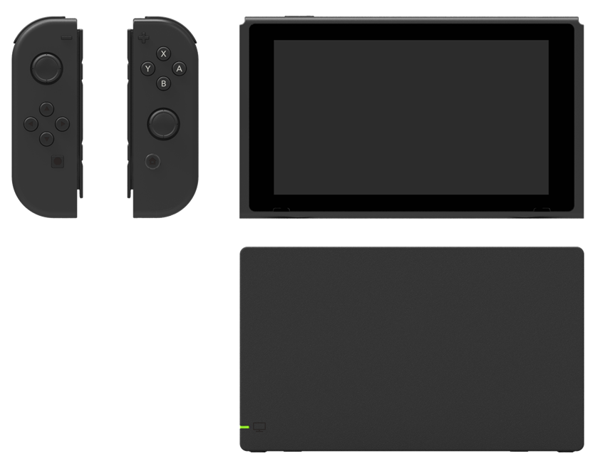

Some features in this documentation are unavailable because JavaScript is not enabled in your browser. The table of contents is available only if JavaScript is enabled. Enable JavaScript and reload this page.
This section describes the hardware specifications for the NX, JOY-CON, and other peripherals.

CONFIDENTIAL